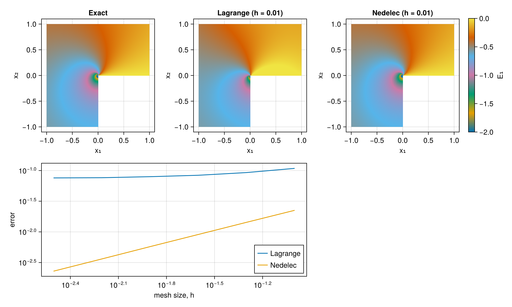

Maxwell Discretizations: The Good, The Bad, and The Ugly
This tutorial is based on Jay Gopalakrishnan (Portland State University) Maxwell Discretizations: The Good, The Bad & The Ugly from the graduate course MTH 653: Advanced Numerical Analysis (Spring 2019)
The purpose of the tutorial is to demonstrate how Nedelec vector interpolations will converge to the correct solution for a Maxwell problem, when vectorized Lagrange interpolations converge to an incorrect solution.

Figure 1: The results of this tutorial, showing how the analytical solution is not found when discretizing the problem using Lagrange interpolations, but when using a Nedelec interpolation, we converge to the analytical solution as the mesh size, $h$, decreases.
Loading packages
We start by adding the required packages for this tutorial
using Ferrite, Tensors, ForwardDiff
using Gmsh, FerriteGmsh
using FerriteTriangulation: Triangulation, SubTriangulation
import CairoMakie as Plt
import GeometryBasics as GB
using FerriteAssemblyIntroduction
Specifically, we will consider the problem to determine the vector-valued field $\boldsymbol{E}$, such that
\[\begin{align*} \mathrm{curl}(\mathrm{curl}(\boldsymbol{E})) &= 0\quad \text{in }\Omega \\ \mathrm{div}(\boldsymbol{E}) &= 0\quad \text{in }\Omega \\ \boldsymbol{E}\cdot \boldsymbol{t} &= g\quad \text{on }\Gamma \end{align*}\]
where $\boldsymbol{t}$ is the normalized tangential vector along the boundary, $\Gamma$, of the domain, $\Omega$. The rotated L-shaped domain is located such that the sharp internal corner is at the origin.
fig = Plt.Figure()
ax = Plt.Axis(fig[1, 1]; xlabel = "x", ylabel = "y")
points = [(0, 0), (1, 0), (1, 1), (-1, 1), (-1, -1), (0, -1), (0, 0)]
Plt.lines!(ax, first.(points), last.(points))Theoretical background
We have the following partial integration rules, where $\boldsymbol{n}$ is the outward pointing normal vector, following Monk (2003) [7, Eqs. (3.47) and (3.51)],
\[\begin{align*} \int_\Gamma \left[\boldsymbol{n}\times\boldsymbol{u}\right]\cdot\boldsymbol{\phi}\ \mathrm{d}\Gamma &= \int_\Omega \left[\nabla \times \boldsymbol{u}\right]\cdot \boldsymbol{\phi}\ \mathrm{d}\Omega - \int_\Omega \boldsymbol{u}\cdot\left[ \nabla \times \boldsymbol{\phi} \right]\ \mathrm{d}\Omega, \quad \boldsymbol{u} \in H(\mathrm{curl}),\ \boldsymbol{\phi} \in (\mathcal{C}^1)^3\\ \int_\Gamma \left[\boldsymbol{n}\times\boldsymbol{u}\right]\cdot\left[\left[\boldsymbol{n}\times\boldsymbol{\phi}\right]\times\boldsymbol{n}\right] \mathrm{d}\Gamma &= \int_\Omega \left[\nabla \times \boldsymbol{u}\right]\cdot \boldsymbol{\phi}\ \mathrm{d}\Omega - \int_\Omega \boldsymbol{u}\cdot\left[ \nabla \times \boldsymbol{\phi} \right]\ \mathrm{d}\Omega, \quad \boldsymbol{u},\ \boldsymbol{\phi}\in H(\mathrm{curl}), \end{align*}\]
respectively. Note that [7, Eq. (3.27)], requiring that $\boldsymbol{u} \in (\mathcal{C}^1)^3$, is a special case of [7, Eq. (3.47)] as $(\mathcal{C}^1)^3 \subset H(\mathrm{curl})$.
We remark that in 2D for $\boldsymbol{u}$ pointing out of the plane, $\boldsymbol{u} = u_3 \boldsymbol{e}_3$, and $\boldsymbol{\phi}$ in the plane, $\boldsymbol{\phi} \cdot \boldsymbol{e}_3 = 0$, we have
\[\left[\boldsymbol{n}\times\boldsymbol{u}\right]\cdot\left[\left[\boldsymbol{n}\times\boldsymbol{\phi}\right]\times\boldsymbol{n}\right] = -u_3 \boldsymbol{\phi} \cdot \boldsymbol{t}\]
where $\boldsymbol{t} = [-n_2,\ n_1]$ is the counter-clockwise tangent vector.
Exact solution
In this example, we choose an exact solution, $\boldsymbol{E}_\mathrm{exact}(\boldsymbol{x})$, that fullfills the differential equations. We then use $\boldsymbol{E}_\mathrm{exact}$ to find $g$ to insert into the Dirichlet boundary conditions. Specifically, we choose
\[\boldsymbol{E}_\mathrm{exact}(\boldsymbol{x}) = \mathrm{grad}(r^{2/3}\sin(2\theta/3))\]
where $r$ and $\theta$ are the polar coordinates. Where $\theta$ is defined as the positive angle measured from the $x$-axis.
The first PDE is directly satisfied by using the gradient to define the vector-valued solution, since $\mathrm{curl}(\mathrm{grad}(u)) = 0$ holds for any field $u$. Furthermore, along the lines, $\theta = 0$ and $\theta = 3\pi/2$, $\sin(2\theta/3) = 0$, such that the $\boldsymbol{E}_\mathrm{exact} \cdot \boldsymbol{t} = 0$. Consequently, even if we have a singularity at $\boldsymbol{x} = \boldsymbol{0}$, this doesn't enter the boundary conditions. Finally, due to the singularity, the components of $\boldsymbol{E}_\mathrm{exact}$ are not in $H^1(\Omega)$. TODO: Explain why $\mathrm{div}(\boldsymbol{E})=0$ is fullfilled, use divergence theorem?
To evaluate the accuracy of the different discretizations, we will use the analytical solution to evaluate the boundary condition, $g = \boldsymbol{E}_\mathrm{exact}\cdot \boldsymbol{t} \quad \text{on }\Gamma$. A correct discretization should then reproduce $\boldsymbol{E}_\mathrm{exact}(\boldsymbol{x})\text{ in }\Omega$, as $\boldsymbol{E}_\mathrm{exact}$ fulfills the PDE exactly, as well as its boundary conditions.
Lagrange interpolation
Following the notes in the linked example, the lagrange problem becomes to solve
\[\begin{align*} \int_\Omega \mathrm{curl}(\delta \boldsymbol{E}) \cdot \mathrm{curl}(\boldsymbol{E})\ \mathrm{d}\Omega + \int_\Omega \mathrm{div}(\delta \boldsymbol{E}) \mathrm{div}(\boldsymbol{E})\ \mathrm{d}\Omega &= 0 \quad \forall\ \delta\boldsymbol{E} \in H^1 \\ \boldsymbol{E}\cdot\boldsymbol{t} &= g\quad \text{on }\Gamma \end{align*}\]
Nedelec interpolation
Using a Lagrange multiplier, $\phi$, to weakly enforce the divergence equation, we obtain the following problem: Find $\boldsymbol{E}\in H(\mathrm{div})$ and $\phi\in H_0^1$, such that
\[\begin{align*} \int_\Gamma \left[\left[\boldsymbol{n}\times\delta\boldsymbol{E}\right]\times\boldsymbol{n}\right]\cdot \left[\boldsymbol{n}\cdot\mathrm{curl}(\boldsymbol{E})\right]\ \mathrm{d}\Gamma + \int_\Omega \mathrm{curl}(\delta\boldsymbol{E})\cdot\mathrm{curl}(\boldsymbol{E})\ \mathrm{d}\Omega + \int_\Omega \delta\boldsymbol{E}\cdot\mathrm{grad}(\phi)\ \mathrm{d}\Omega &= 0\\ \int_\Omega \mathrm{grad}(\delta\phi) \cdot \boldsymbol{E}\ \mathrm{d}\Omega &= 0 \\ \boldsymbol{E}\cdot \boldsymbol{t} &= g\; \text{on }\Gamma \end{align*}\]
for all $\delta\boldsymbol{E}\in H_0(\mathrm{curl})$ and $\delta\phi\in H_0^1$.
We then use FerriteGmsh.jl to create the grid
function setup_grid(h = 0.2; origin_refinement = 1)
# Initialize gmsh
Gmsh.initialize()
gmsh.option.set_number("General.Verbosity", 2)
# Add the points, finer grid at the discontinuity
o = gmsh.model.geo.add_point(0.0, 0.0, 0.0, h / origin_refinement)
p1 = gmsh.model.geo.add_point(1.0, 0.0, 0.0, h)
p2 = gmsh.model.geo.add_point(1.0, 1.0, 0.0, h)
p3 = gmsh.model.geo.add_point(-1.0, 1.0, 0.0, h)
p4 = gmsh.model.geo.add_point(-1.0, -1.0, 0.0, h)
p5 = gmsh.model.geo.add_point(0.0, -1.0, 0.0, h)
pts = [o, p1, p2, p3, p4, p5, o]
# Add the lines
lines = [gmsh.model.geo.add_line(pts[i - 1], pts[i]) for i in 2:length(pts)]
# Create the closed curve loop and the surface
loop = gmsh.model.geo.add_curve_loop(lines)
gmsh.model.geo.add_plane_surface([loop])
# Synchronize the model
gmsh.model.geo.synchronize()
# Generate a 2D mesh
gmsh.model.mesh.generate(2)
# Save the mesh, and read back in as a Ferrite Grid
grid = mktempdir() do dir
path = joinpath(dir, "mesh.msh")
gmsh.write(path)
togrid(path)
end
# Finalize the Gmsh library
Gmsh.finalize()
# Add boundary parts
top = ExclusiveTopology(grid)
addboundaryfacetset!(grid, top, "vertical_facets", x -> abs((x[1] - 1) * x[1] * (x[1] + 1)) ≤ 1.0e-6)
addboundaryfacetset!(grid, top, "horizontal_facets", x -> abs((x[2] - 1) * x[2] * (x[2] + 1)) ≤ 1.0e-6)
bfacets = union(getfacetset(grid, "vertical_facets"), getfacetset(grid, "horizontal_facets"))
addfacetset!(grid, "boundary_facets", bfacets)
return grid
endsetup_grid (generic function with 2 methods)And prepare some functions to process and plot the data on the grid by using FerriteTriangulation.jl
function _create_data!(f, data, a, cvs, subtria::SubTriangulation, dr::UnitRange)
sdh = subtria.sdh
grid = sdh.dh.grid
c1 = first(subtria.faces)[1]
x = copy(getcoordinates(grid, c1))
dofs = copy(celldofs(sdh, c1))
ae = zeros(eltype(a), length(dofs))
for (i, (cellnr, facenr)) in enumerate(subtria.faces)
cv = cvs[facenr]
getcoordinates!(x, grid, cellnr)
reinit!(cv, getcells(grid, cellnr), x)
celldofs!(dofs, sdh, cellnr)
copyto!(ae, view(a, dofs))
node_idxs = subtria.face_nodes[i]:(subtria.face_nodes[i + 1] - 1)
for q_point in 1:getnquadpoints(cv)
data[node_idxs[q_point]] = f(function_value(cv, q_point, ae, dr))
end
end
return
end
"""
create_data(tr::Triangulation, grid::AbstractGrid, a::Vector{<:Number}, ::NTuple{N, <:Interpolation};
f = identity)
Create scalar data by evaluating `f(function_value(...))` at each triangulation node in the `grid`.
"""
function create_data(tr::Triangulation, fieldname::Symbol, a; f = identity)
data = zeros(length(tr.nodes))
dh = first(tr.sub_triangulation).sdh.dh
if length(a) != ndofs(dh)
display(dh)
println((dh = ndofs(dh), a = length(a)))
error("dof vector length not matching number of dofs in triangulation dh")
end
for subtria in tr.sub_triangulation
sdh = subtria.sdh
ip = Ferrite.getfieldinterpolation(sdh, fieldname)
cvs = [CellValues(cr, ip, geometric_interpolation(getcelltype(subtria.sdh))) for cr in subtria.rules]
_create_data!(f, data, a, cvs, subtria, dof_range(sdh, fieldname))
end
return data
endMain.create_dataAnalytical implementation
mesh_size = 0.01
grid = setup_grid(mesh_size; origin_refinement = 1)
dh_ana = close!(add!(DofHandler(grid), :u, DiscontinuousLagrange{RefTriangle, 1}()^2))
function analytical_potential(x::Vec{2}) # Analytical potential to be differentiated
Δθ = -3π / 4 # Rotate discontinuous line to 4th quadrant
xp = rotate(x, Δθ)
r = sqrt(x ⋅ x + eps())
θ = r ≤ 1.0e-6 ? zero(eltype(x)) : (atan(xp[2], xp[1]) - Δθ)
return r^(2 // 3) * sin(2θ / 3)
end
analytical_solution(x::Vec{2}) = gradient(analytical_potential, x)
a_ana = zeros(ndofs(dh_ana))
apply_analytical!(a_ana, dh_ana, :u, analytical_solution);Error calculation
We will calculate the error, $e(h)$, between the analytical, $\boldsymbol{E}_\mathrm{exact}$, and numerical, $\boldsymbol{E}_\mathrm{h}(h)$, solutions as integral norm,
\[e(h) = \frac{1}{V}\int_\Omega ||\boldsymbol{E}_\mathrm{h}(h) - \boldsymbol{E}_\mathrm{exact}||^2\ \mathrm{d}\Omega, \quad V = \int_\Omega \mathrm{d}\Omega\]
where $h$ is a measure of the element size.
mutable struct L2Error{F}
l2error::Float64
volume::Float64
const exact_fun::F
end
function FerriteAssembly.integrate_cell!(vals::L2Error{F}, state, ae, material, cv::CellValues, cellbuffer) where {F}
for q_point in 1:getnquadpoints(cv)
Eh = function_value(cv, q_point, ae)
x = spatial_coordinate(cv, q_point, getcoordinates(cellbuffer))
dΩ = getdetJdV(cv, q_point)
vals.l2error += norm(Eh - vals.exact_fun(x))^2 * dΩ
vals.volume += dΩ
end
return
end
function FerriteAssembly.integrate_cell!(vals::L2Error{F}, state, ae, material, cv::NamedTuple, cellbuffer) where {F}
for q_point in 1:getnquadpoints(cv.E)
Eh = function_value(cv.E, q_point, ae, dof_range(cellbuffer, :E))
x = spatial_coordinate(cv.E, q_point, getcoordinates(cellbuffer))
dΩ = getdetJdV(cv.E, q_point)
vals.l2error += norm(Eh - vals.exact_fun(x))^2 * dΩ
vals.volume += dΩ
end
return
end;Lagrange solution
struct LagrangeMaterial end
function FerriteAssembly.element_routine!(Ke, re, s, ae, ::LagrangeMaterial, cv, cellbuffer)
for q_point in 1:getnquadpoints(cv)
dΩ = getdetJdV(cv, q_point)
for i in 1:getnbasefunctions(cv)
div_δNi = shape_divergence(cv, q_point, i)
curl_δNi = shape_curl(cv, q_point, i)
for j in 1:getnbasefunctions(cv)
div_Nj = shape_divergence(cv, q_point, j)
curl_Nj = shape_curl(cv, q_point, j)
Ke[i, j] += (curl_δNi ⋅ curl_Nj + div_δNi * div_Nj) * dΩ
end
end
end
return
end
function solve_lagrange(dh)
ip = Ferrite.getfieldinterpolation(dh, Ferrite.find_field(dh, :E))
ch = ConstraintHandler(dh)
add!(ch, Dirichlet(:E, getfacetset(dh.grid, "horizontal_facets"), (x, _) -> gradient(analytical_potential, x)[2], [2]))
add!(ch, Dirichlet(:E, getfacetset(dh.grid, "vertical_facets"), (x, _) -> gradient(analytical_potential, x)[1], [1]))
close!(ch)
cv = CellValues(QuadratureRule{RefTriangle}(1), ip)
K = allocate_matrix(dh)
f = zeros(ndofs(dh))
db = setup_domainbuffer(DomainSpec(dh, LagrangeMaterial(), cv))
as = start_assemble(K, f)
work!(as, db)
apply!(K, f, ch)
a = K \ f
l2_vals = L2Error(0.0, 0.0, analytical_solution)
work!(Integrator(l2_vals), db; a)
return a, sqrt(l2_vals.l2error) / l2_vals.volume
end
dh_lagrange = close!(add!(DofHandler(grid), :E, Lagrange{RefTriangle, 1}()^2))
a_lagrange, e_lagrange = solve_lagrange(dh_lagrange)
function lagrange_error(grid)
ip = Lagrange{RefTriangle, 1}()^2
dh = close!(add!(DofHandler(grid), :E, ip))
_, e = solve_lagrange(dh)
return e
end;Nedelec solution
struct NedelecMaterial end
function FerriteAssembly.element_residual!(re, s, ae, ::NedelecMaterial, cv, cellbuffer)
for q_point in 1:getnquadpoints(cv.E)
dΩ = getdetJdV(cv.E, q_point)
E = function_value(cv.E, q_point, ae, dof_range(cellbuffer, :E))
curlE = function_curl(cv.E, q_point, ae, dof_range(cellbuffer, :E))
∇ϕ = function_gradient(cv.ϕ, q_point, ae, dof_range(cellbuffer, :ϕ))
for (i, I) in pairs(dof_range(cellbuffer, :E))
δNE = shape_value(cv.E, q_point, i)
curl_δNE = shape_curl(cv.E, q_point, i)
re[I] += (curl_δNE ⋅ curlE + δNE ⋅ ∇ϕ) * dΩ
end
for (i, I) in pairs(dof_range(cellbuffer, :ϕ))
gradδNϕ = shape_gradient(cv.ϕ, q_point, i)
re[I] += (gradδNϕ ⋅ E) * dΩ
end
end
return
end
function solve_nedelec(dh)
ipE = Ferrite.getfieldinterpolation(dh, Ferrite.find_field(dh, :E))
ipϕ = Ferrite.getfieldinterpolation(dh, Ferrite.find_field(dh, :ϕ))
CT = getcelltype(dh.grid)
ch = ConstraintHandler(dh)
add!(ch, WeakDirichlet(:E, getfacetset(dh.grid, "boundary_facets"), (x, _, n) -> analytical_solution(x) × n))
add!(ch, Dirichlet(:ϕ, getfacetset(dh.grid, "boundary_facets"), Returns(0.0)))
close!(ch)
qr = QuadratureRule{RefTriangle}(1)
ipg = geometric_interpolation(CT)
cv = (E = CellValues(qr, ipE, ipg), ϕ = CellValues(qr, ipϕ, ipg))
K = allocate_matrix(dh)
f = zeros(ndofs(dh))
db = setup_domainbuffer(DomainSpec(dh, NedelecMaterial(), cv); autodiffbuffer = true)
as = start_assemble(K, f)
a = zeros(ndofs(dh))
work!(as, db; a)
apply!(K, f, ch)
a .= K \ f
l2_vals = L2Error(0.0, 0.0, analytical_solution)
work!(Integrator(l2_vals), db; a)
return a, sqrt(l2_vals.l2error) / l2_vals.volume
end
ipE = Nedelec{2, RefTriangle, 1}()
ipϕ = Lagrange{RefTriangle, 1}()
dh_nedelec = DofHandler(grid)
add!(dh_nedelec, :E, ipE)
add!(dh_nedelec, :ϕ, ipϕ)
close!(dh_nedelec)
a_nedelec, e_nedelec = solve_nedelec(dh_nedelec)
function nedelec_error(grid)
ipE = Nedelec{2, RefTriangle, 1}()
ipϕ = Lagrange{RefTriangle, 1}()
dh = DofHandler(grid)
add!(dh, :E, ipE)
add!(dh, :ϕ, ipϕ)
close!(dh)
_, e = solve_nedelec(dh)
return e
end
function calculate_errors(mesh_sizes)
lagrange_errors = zeros(length(mesh_sizes))
nedelec_errors = similar(lagrange_errors)
for (i, h) in enumerate(mesh_sizes)
grid = setup_grid(h; origin_refinement = 1)
lagrange_errors[i] = lagrange_error(grid)
nedelec_errors[i] = nedelec_error(grid)
end
return lagrange_errors, nedelec_errors
end
mesh_sizes = 0.1 * ((1 / 2) .^ (0:5));lagrange_errors, nedelec_errors = calculate_errors(mesh_sizes)function plot_field(fig_part, dh, fieldname, dofvec, name::String; plot_edges = false, meshkwargs...)
tr = Triangulation(dh, 2)
data = create_data(tr, fieldname, dofvec; f = (x -> x[1]))
ax = Plt.Axis(fig_part; aspect = Plt.DataAspect(), xlabel = "x₁", ylabel = "x₂", title = name)
nodes = [GB.Point(x.data) for x in tr.nodes]
m = Plt.mesh!(
ax, nodes, reshape(tr.triangles, :); color = data,
colormap = Plt.Makie.wong_colors(),
interpolate = true,
meshkwargs...
)
if plot_edges
for i in 2:length(tr.tri_edges)
Plt.lines!(ax, view(nodes, view(tr.edges, tr.tri_edges[i - 1]:(tr.tri_edges[i] - 1))); color = :black)
end
end
return m
end
fig = let
fig = Plt.Figure(size = (1000, 600))
m_ana = plot_field(fig[1, 1], dh_ana, :u, a_ana, "Analytical"; plot_edges = false, colorrange = (-2, 0))
m_lag = plot_field(fig[1, 2], dh_lagrange, :E, a_lagrange, "Lagrange (h = $mesh_size)"; plot_edges = false, colorrange = (-2, 0))
m_ned = plot_field(fig[1, 3], dh_nedelec, :E, a_nedelec, "Nedelec (h = $mesh_size)"; plot_edges = false, colorrange = (-2, 0))
Plt.Colorbar(fig[1, 4], m_ned; label = "E₁")
ax = Plt.Axis(
fig[2, 1:2];
xscale = log10, yscale = log10,
xlabel = "mesh size, h", ylabel = "error"
)
Plt.lines!(ax, mesh_sizes, lagrange_errors; label = "Lagrange")
Plt.lines!(ax, mesh_sizes, nedelec_errors; label = "Nedelec")
Plt.axislegend(ax; position = :rb)
fig
end;This page was generated using Literate.jl.